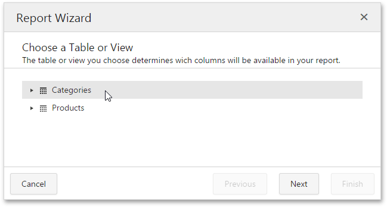
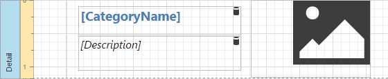
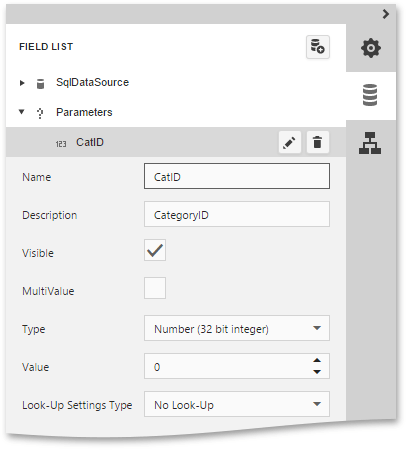
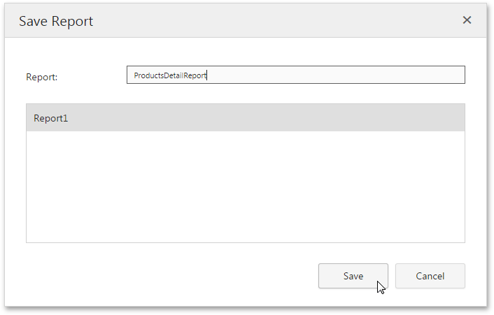
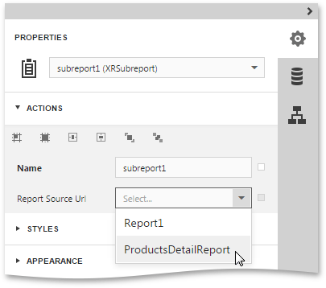
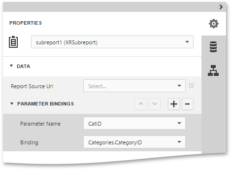
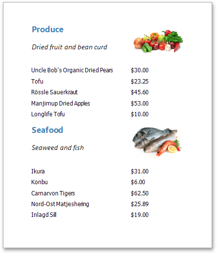

Master-Detail Report (Subreports)
This tutorial describes the steps to create a master-detail report using the Subreport control. For an alternative approach, refer to Master-Detail Report (Detail Report Bands).
To create a master-detail report using the subreport controls, do the following.
- Create a Master Report
- Create and Customize a Detail Report
- Configure Subreport Parameter Bindings
- Get the Result
Create a Master Report
Create a new report and bind it to a data source. In the Report Wizard, select the data table that will be used as the master table.

Drop the required fields from the Field List onto the Detail band. In this tutorial, we'll use the following report layout.

Drag the Subreport control from the Toolbox and drop it onto the Detail band.

Double-click the added subreport to open the detail report. To switch between master and detail reports, click the corresponding tab in the bottom left corner of the Design Surface.

Create and Customize the Detail Report
Bind the detail report to a data source using the Report Wizard. In the Report Wizard, select the data table that will be used as the detail table.

Drop the required fields from the Field List onto the Detail band. In this tutorial, we'll use the following layout for the detail report.

To add a parameter to the report, in the Field List, select the Parameters node and click Add parameter.

Then, specify properties of this parameter as shown below.

To filter the detail report data, switch to the Properties Panel and click the ellipsis button for the report's Filter String property.

Then, in the invoked Filter Editor, construct an expression where the CategoryID data field is compared to the CatID parameter. To add a parameter to an expression, expand the drop-down menu for a value placeholder and select the Parameter item. This will convert the value placeholder into a parameter placeholder. Next, click the placeholder to choose the parameter.

Click Save to exit the Filter Editor.
Invoke the menu of the Web Report Designer and click Save to save the detail report to the server-side report storage.

In the invoked Save Report dialog, specify the report name and click Save.

Note
You can utilize the Subreport control to re-use an already existing report in the server-side report storage as a detail report. To do this, drop the Subreport control onto a report band, expand the drop-down list for the subreport's Report Source Url property and select the required report.

Configure Subreport Parameter Bindings
Switch back to the master report and bind the subreport's CatID parameter used as a filtering criterion to the master report's CategoryID data field, which will serve as a source of the parameter value.
To do this, select the subreport, expand the Data category on the Properties Panel, select the Parameter Bindings section and add a new parameter binding. In the binding properties list, specify the data field to which you want to bind a subreport parameter and the name of the parameter that you want to bind.

Get the Result
The master-detail report is now ready. Switch the master report to the Preview mode to view the result.
